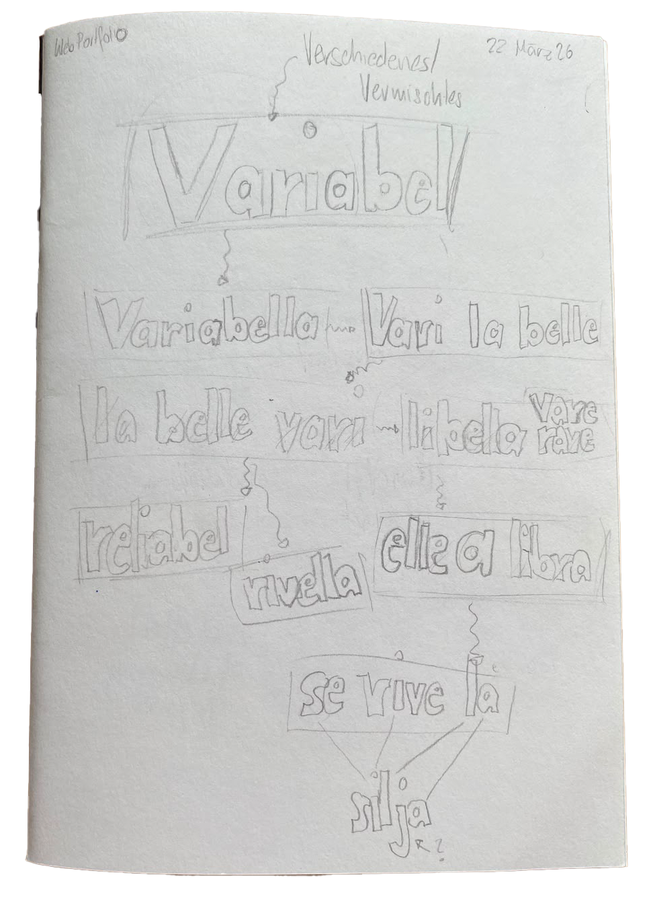
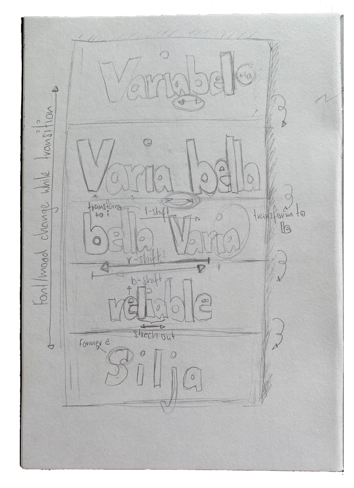
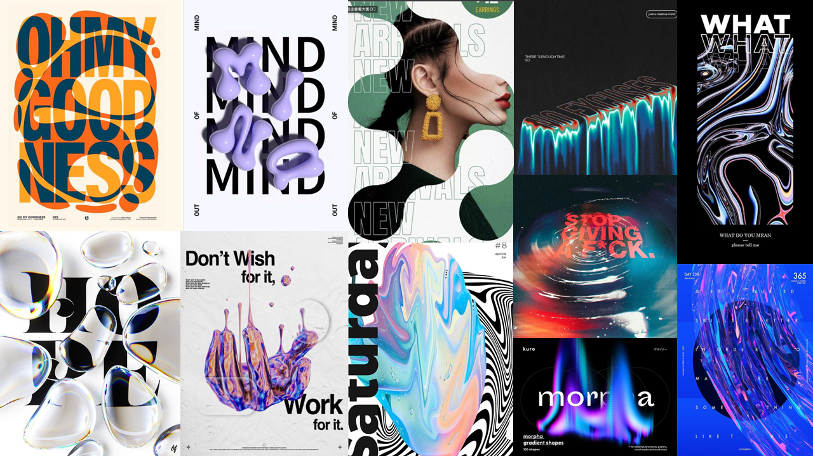
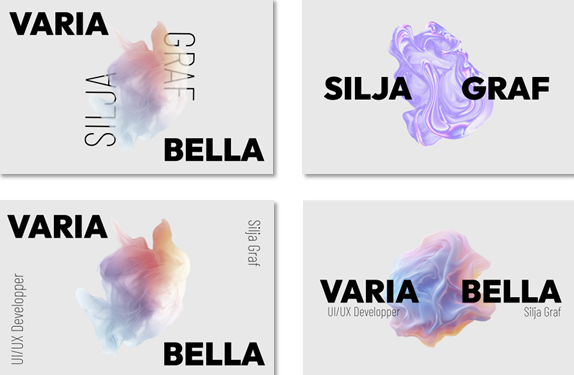
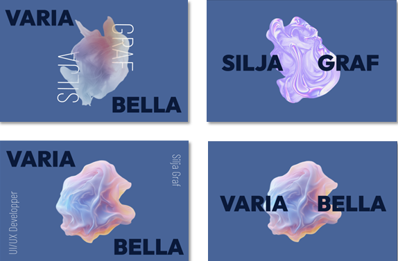
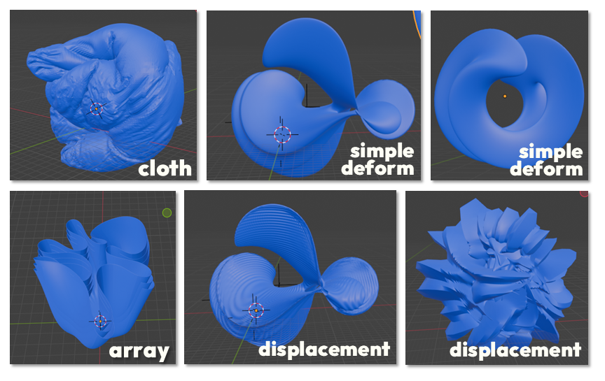
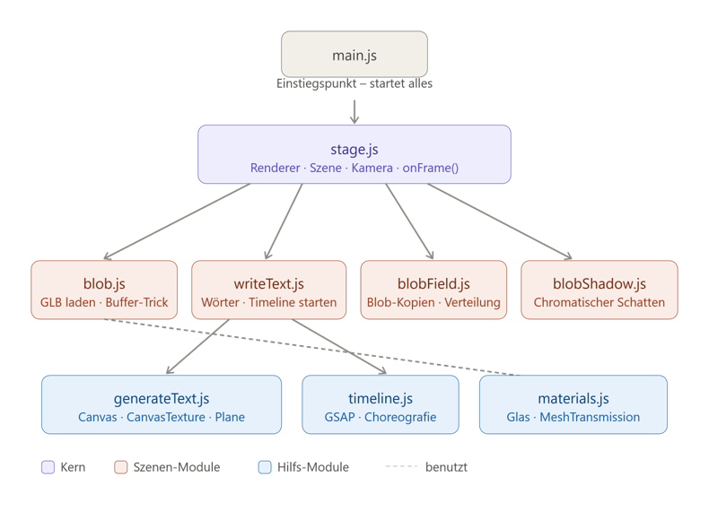
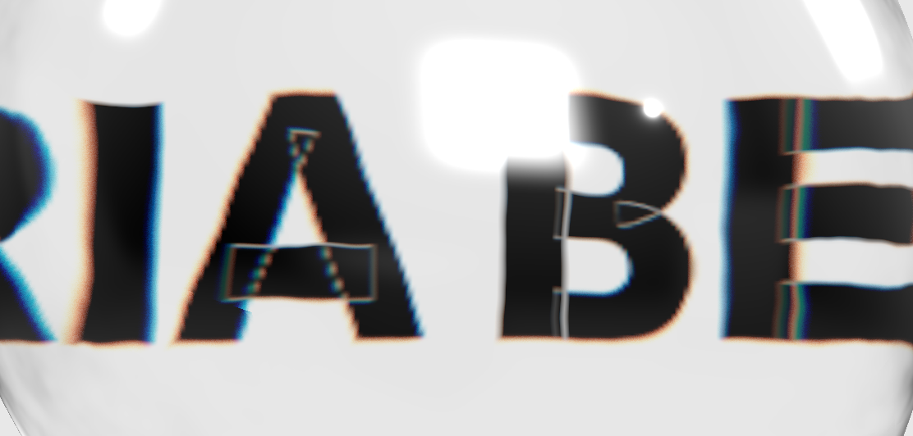
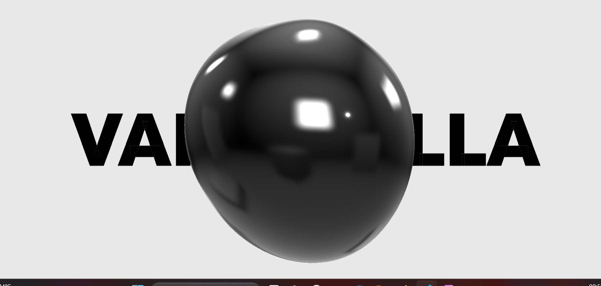
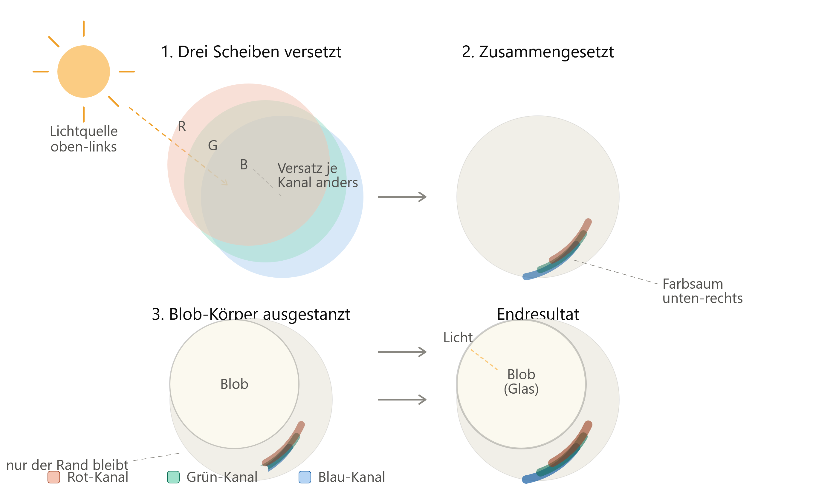

Die Splashpage zum Webportfolio hat auf der sichtbaren Ebene das Ziel, ein originelles und eigenständiges Erscheinungsbild zu schaffen. Während des Projekts wurden zudem viele technische Lösungen erarbeitet sowie Kompetenzen im Webbereich angeeignet und erweitert.
Ideenfindung


Der Leitgedanke für das Projekt war, das Zusammenspiel von Design und Informatik zu visualisieren. Durch freies Experimentieren mit Wörtern, welche beide Aspekte verbinden, entstand das Wortspiel Varia Bella. Das Wort Variabel aus der Informatik verwandelt sich in "Bella Varia" oder "Varia Bella" und ist somit in sich variabel. Im übertragenen Sinne ist es auch ein Synonym für eine schöne Vielfalt an Kompetenzen, welche dieses Portfolio widerspiegeln soll.
Technische Experimente
Aufgrund der Skizzen wurden technische Lösungen mittels der JavaScript-Bibliothek GSAP implementiert. Der Fokus lag auf dem technischen Herantasten an Webanimationen.
Inspiration

In einer zweiten Phase stand das Design im Fokus. Dazu wurde zunächst ein Moodboard zur Inspiration erstellt.
Figma


Angestrebt wurde ein modernes, minimalistisches Design, welches trotzdem einen spielerischen Charakter aufweist. Letzteres sollte mittels einer dynamischen Blobform erreicht werden.
Blender

Die Modellierung des Blobs in Blender stellte sich durch die organischen Strukturen als Herausforderung dar. Die Entscheidung, einen simplen Tropfen als Blob zu verwenden, wurde allerdings aus Kommunikationsgründen getroffen, da dieser mit dem Schriftzug interagiert, anstatt den Fokus auf sich zu lenken.
ThreeJS

Um den Blob optimal mit der Animation zu integrieren, wurde die WebGL-Bibliothek Three.js verwendet. Die gestalterische Vision, den Blob als brechenden Glastropfen mit dem Text interagieren zu lassen, brachte einige technische Herausforderungen mit sich.


Um das Material des Blobs gläsern erscheinen zu lassen, musste ein Buffer-Trick angewendet werden. Im Frameloop wird ein Bild der Schrift erzeugt und anschliessend der Blob darübergelegt, damit die Brechung berechnet werden konnte. Da der Schriftaufbau durch die Brechung sichtbar wurde, konnte die in Three.js eingebaute Schriftfunktion nicht verwendet werden. Stattdessen musste die Schrift als Textur auf eine 3D-Plane gemappt werden.
Schatten

Abschliessend wurden einige gestalterische Experimente für das Schlussbild durchgeführt. Letztlich fiel die Entscheidung auf einen dezenten chromatischen Schatten, welcher sich farblich an der Glasbrechung orientiert. Technisch passiert dies im Fragment-Shader, indem drei Farbschichten versetzt überlagert werden.